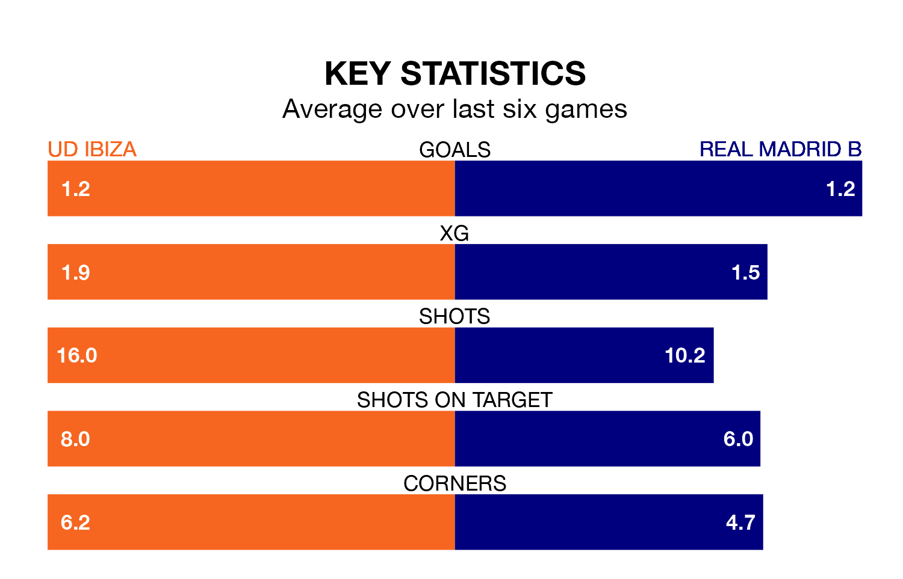

UD Ibiza host Real Madrid B in Sunday's early match at Estadio Municipal de Can Misses looking to bounce back from defeat last time out in Primera Division RFEF Group 2.
Ibiza, who sit third in the league after 34 games, fell to a 3-1 away defeat to Antequera CF on April 28.
They face a Madrid B side who picked up a win in their last match, a 3-1 victory against San Fernando CD, and who sit 12th in the table.
With 53 goals in 34 games so far this season, Ibiza are the league's third-highest scorers with 1.6 goals per game. And they are conceding fewer than average, letting in 31 goals at a rate of 0.9 per game.
Madrid B are also above average scorers, with 1.2 goals per game, compared to a league average of 1.1. They have also conceded 1.2 goals per game.
The home side's Alejandro Gallar Falguera is the league's most creative player, racking up seven assists in 20 appearances so far this season.
For the visitors, Nicolás Paz Martínez has set up the most goals, having laid on four assists in 15 games.
Ibiza are in disappointing form in Primera Division RFEF Group 2, with two wins and four losses from their last six games.
With three wins and three losses over that period, Madrid B's form is better – they have taken nine points from 18, compared to Ibiza's six.
Updated: 12:00 (UTC), 02/05/24